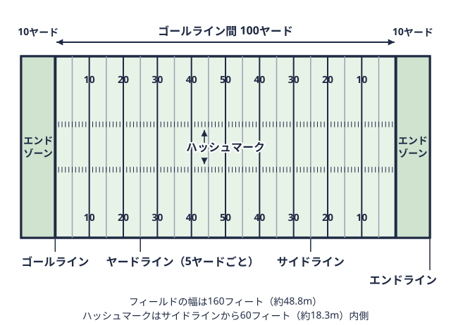

トレーニング 2026-11-27
アメフトのキャッチ練習のコツ｜手の形・目線・段階別ドリル
はじめての方向け
「ボールが手に当たるのに弾いてしまう」「胸で受けてしまって、あとで落としてしまう」。キャッチに悩む部員は、WRフィールドの外側に広がり、投げられたパスをキャッチして陣地を進める選手。 用語辞典で見るやTE攻撃のライン（壁役の選手たち）の端に並び、壁役とパスキャッチの両方をこなす選手。用語辞典で見るに限らずRBQBからボールを受け取って走り、陣地を進める選手。足の速さと当たり負けしない強さが求められる。用語辞典で見るやDB守備の後ろ側で、相手のパスを防ぐ選手の総称。後方と外側を守る。
用語辞典で見るやTE攻撃のライン（壁役の選手たち）の端に並び、壁役とパスキャッチの両方をこなす選手。用語辞典で見るに限らずRBQBからボールを受け取って走り、陣地を進める選手。足の速さと当たり負けしない強さが求められる。用語辞典で見るやDB守備の後ろ側で、相手のパスを防ぐ選手の総称。後方と外側を守る。 用語辞典で見る、ときにはQB攻撃の司令塔。作戦に合わせて、パスを投げたり、走る選手にボールを渡したりする。用語辞典で見るやOLスクリメージライン上に並ぶ5人の壁役。パスを投げる選手を守り、走る選手の道を作る。用語辞典で見るにもいるのではないでしょうか。パスが飛んできた場面で捕れるかどうかは、攻撃の流れだけでなく、インターセプト相手の投げたパスを空中で奪い取ること。奪った側が攻撃権を得る。用語辞典で見るを狙うディフェンスボールを持たず、相手の攻撃を止める側のチーム。相手に進ませず、ボールを奪うことも目指す。用語辞典で見るにとっても大切な技術です。この記事では、公開されている指導資料や経験者の声をもとに、キャッチの基本を「手の形」「目線」「体の向き」「確保後」の4つに分け、素手から走りながらまでの段階別の練習と、自分の課題を切り分ける確認表にまとめます。内容は一般的な基礎の整理で、所属チームの指導方針とは異なる場合があります。最終的にはコーチの指示を優先してください。
用語辞典で見る、ときにはQB攻撃の司令塔。作戦に合わせて、パスを投げたり、走る選手にボールを渡したりする。用語辞典で見るやOLスクリメージライン上に並ぶ5人の壁役。パスを投げる選手を守り、走る選手の道を作る。用語辞典で見るにもいるのではないでしょうか。パスが飛んできた場面で捕れるかどうかは、攻撃の流れだけでなく、インターセプト相手の投げたパスを空中で奪い取ること。奪った側が攻撃権を得る。用語辞典で見るを狙うディフェンスボールを持たず、相手の攻撃を止める側のチーム。相手に進ませず、ボールを奪うことも目指す。用語辞典で見るにとっても大切な技術です。この記事では、公開されている指導資料や経験者の声をもとに、キャッチの基本を「手の形」「目線」「体の向き」「確保後」の4つに分け、素手から走りながらまでの段階別の練習と、自分の課題を切り分ける確認表にまとめます。内容は一般的な基礎の整理で、所属チームの指導方針とは異なる場合があります。最終的にはコーチの指示を優先してください。
キャッチを4つの要素に分けて考える
キャッチが安定しない原因は、手の力が弱いからとは限りません。一般的には、次の4つに分けると原因を探しやすくなります。
- 手の形：ボールの高さに合った形で迎えられているか
- 目線：ボールが手に収まるまで見続けられているか
- 体の向き・位置：ボールの軌道に自分の体を合わせられているか
- 確保後：捕ったあとにボールを守る動作へつなげられているか
NFL FLAGの解説ページは、キャッチの手順を「体を合わせる」「手の形と目」「ボールを体に引きつける」の流れで紹介しています（HOW TO CATCH A FOOTBALL｜NFL FLAG）。USA Footballの指導者向けブログでも、ボールに集中できていない、ボールへの対応ができていない、捕ったあとまで走り抜けていない、といった課題ごとにドリルを分けて紹介しています（3 drills to reinforce wide receiver catching technique｜USA Football）。原因を分けて練習する考え方は、日本の現場にも取り入れやすいと考えられます。
手の形：高いボールと低いボールで使い分ける
NFL FLAGの解説では、腰より高いボールには両手の親指と人差し指を寄せて「ダイヤモンド（三角形）」を作り、低いボールには小指同士を寄せて手のひらを上向きに受ける形が紹介されています。どちらの場合も、手のひらではなく指先で捕ること、肘を軽く曲げて柔らかい手で受けることが勧められています。
日本語の個人ブログにも、似た声があります。あるブログでは、胸で捕らずに両手で捕ること、親指と人差し指でボールを迎え入れるイメージを持つこと、手のひらではなく指先でキャッチすることが紹介されています（アメフトのキャッチについて｜loico）。こうした情報は個人の経験にもとづくもので、全員に当てはまるとは限りませんが、英語圏の解説と重なる部分が多い点は参考になります。
手が固くなっていないかを確かめる
NFL FLAGのドリル解説には、ボールが手から弾かれる場合は、指先ではなく手のひらで捕ろうとしている可能性がある、という趣旨の説明があります。弾く感覚が続く場合は、次の点を見直してみてください。
- 腕や肩に力が入って、手が固くなっていないか
- ボールが来る前から手のひらを前に出していないか
- 指が開きすぎていないか、逆に閉じすぎていないか
手の形は一度覚えれば終わりではなく、疲れてくると崩れる場合があります。練習の最後のほうでも同じ形を保てているか、動画で見返すと気づきやすくなります。
目線：ボールが手に収まるまで見る
USA Footballのブログでは、ボールに目を集中させる練習として「ボールの写真を撮るように見る」という表現が紹介されています。日本語の個人ブログでも、ボールが手に収まるまで見続けることが勧められています。守備の選手が視界に入ると、つい視線を外したくなりますが、視線を外すと弾く原因になる場合があります。
一方で、オーバー・ザ・ショルダー（肩越しのパス）のように、ボールを目で追えるタイミングが限られる場面もあります。NFL FLAGの解説では、守備側にボールを触られないよう、手を上げるのは直前まで待つこと、手を早く出して減速しないことが勧められています。ボールを見続ける意識と、手を出すタイミングは別々に練習すると整理しやすくなります。
体の向き：ボールの通り道に自分を置く
NFL FLAGの解説は、可能なら肩を投げ手に向けて、ボールの軌道の真正面に位置することを勧めています。ボールが低い、横にずれている、遠いといった場合でも、手だけで追うのではなく、足を動かして体をボールの通り道に入れる考え方です。
USA Footballのブログには、ずれたボールを想定した「バッドボール・ドリル」が紹介されています。コーチが約10ヤード距離の単位で、1ヤードは約0.9メートル。フィールドには5ヤードごとに線が引かれている。 
確保後：捕ったら、すぐに守る
捕球の動作は、ボールを手に収めた時点では終わりません。NFL FLAGの解説は、捕ったあとにボールを手・前腕・肘で体に引きつけ、高く固く保つことを勧めています。確保後の持ち方やファンブルボールを持つ選手が、落としたりはじかれたりして、ボールを持ち続けられなくなること。用語辞典で見る防止は、別記事のアメフトのボールセキュリティとは｜ファンブルを防ぐ持ち方で整理しているので、あわせて確認してください。
先ほどの個人ブログでも、キャッチのあとはタックルボールを持つ相手を、体を使って止めること。攻撃のラインの端に立つ選手の呼び名でもある。用語辞典で見るに備えてボールを守る意識を持つことが勧められています。USA Footballのブログも、捕った後に上方向へ加速する動き（走り抜けるキャッチ）の練習を取り上げています。キャッチと確保、確保と走り出しが分断されていないかを、練習中に確かめてみてください。
段階別の練習メニュー
ここからは、上の4要素を練習に落とし込みます。いずれも一般的な内容で、人数・場所・安全面は所属チームの方針に従ってください。
ステップ1：素手で、短い距離から
個人ブログでは、初心者は素手で練習し、グローブに頼らずボールの感覚を養う考え方が紹介されています。期間や頻度はチームや個人によって異なるため、「半年」といった数字を目安にするかどうかはコーチと相談するとよいでしょう。グローブの選び方はアメフトのグローブの選び方にまとめています。
まず約10ヤードの距離で向かい合って投げ合い、高いボールではダイヤモンド、低いボールでは小指寄せの形を確認します。NFL FLAGのドリルでも、約10ヤードから始めて、距離と球速を少しずつ上げる流れが紹介されています。
ステップ2：高さ・左右を変える
投げ手に、高め・低め・左右にずらした球を投げてもらい、足を動かして体を合わせる練習をします。USA Footballのバッドボール・ドリルが参考になります。慣れてきたら、片手で捕る練習も取り入れられますが、まずは両手で確実に捕れる形を作ることが先です。
ステップ3：走りながら捕る
NFL FLAGの「オーバー・ザ・ショルダー」では、レシーバーが前に走りながら肩越しにボールを見て、前方に投げられた球を全力に近いスピードで捕り、捕った後にボールを守る動作を行います。左右の肩の両方で練習することが勧められています。走る距離やスピードは、体の状態に合わせて無理のない範囲で調整してください。
ステップ4：ルートの流れの中で捕る
ブレイクのあとにQBへ体を向け、ボールを迎えるまでを一連の動きにします。ルートの走り方はアメフトWRのルートランニング基礎、投げる側のQBの視点はアメフトQBに必要な能力と練習法で整理しています。USA Footballのバッグ・ドリル（3つのバッグの間を通って、最後にキャッチして上方向へ加速）は、走る動きの中でキャッチする練習の例です。
自分の課題を切り分ける確認表
練習のあとに、次の表で振り返ってみてください。動画があれば、チームメイトに撮ってもらうと確認しやすくなります。
| 症状 | 見直したい要素 | 試してみたい練習 |
|---|---|---|
| 手に当たるが弾く | 手の形・手の固さ | ステップ1の近距離で、指先で捕る意識 |
| 胸で受けてしまう | 体の向き・手を出す位置 | ステップ2で足を動かして体を合わせる |
| 捕る直前に目が切れる | 目線 | ボールを最後まで見る意識（写真を撮る意識） |
| 走ると落とす | 手を出すタイミング・減速 | ステップ3、直前まで手を上げない |
| 捕った後に落とす | 確保後の持ち方 | ボールを体に引きつける動作を毎回つける |
あくまで原因の一例で、実際には複数の要素が重なる場合があります。課題が分かりにくいときは、コーチやポジションの先輩に動画を見てもらいましょう。
練習で気をつけたいこと
ボールを使った練習でも、突き指などのケガは起こりえます。特に指先で捕る練習が増えると、指への負担がかかる場合があります。予防や対処はアメフトの突き指・指のケガ予防も参考にしてください。また、練習前のウォームアップを省略せず、体調が万全でないときは無理をしないことも大切です。
試合の中でキャッチを見るときのヒント
観戦や試合の振り返りで、キャッチの質を見る場面があります。関東学生アメフト（TOP8・BIG8）の試合を見るときは、ボールが手に届く前の体の向きや、確保後の動きに注目してみてください。チームごとの傾向や記録は、データページで確認できます。
記録だけではキャッチの質までは分かりませんが、気になる試合の映像と照らし合わせると、振り返りの視点が増える場合があります。
まとめ
キャッチを安定させるには、手の形、目線、体の向き、確保後の4つを分けて見直すことが、一般的な整理として役立ちます。まずは素手で短い距離から始め、高さや左右を変え、走りながら、ルートの流れの中へと段階を上げていく進め方が考えられます。練習のあとは確認表で原因を切り分け、課題が分かりにくいときはコーチや先輩に動画を見てもらってください。
参考リンク
- HOW TO CATCH A FOOTBALL｜NFL FLAG
- 3 drills to reinforce wide receiver catching technique｜USA Football
- アメフトのキャッチについて｜loico（個人ブログ）
本記事は、NFL FLAG・USA Football・個人ブログが公開している情報をもとに、編集部が構成した一般的な基礎ガイドです。個人ブログの内容は個人の経験にもとづく意見であり、効果や適した方法には個人差があります。練習の導入にあたっては、所属チームの指導者やトレーナーとも相談のうえで取り組んでください。
この部活・競技を応援したい方へ
協賛・応援はこちらから。
取材してほしい部活を募集中
あなたの部活・チームを取材してほしい方はこちらから。
部活を続けながら、就活も進めたい方へ
体育会の学生のための就活相談です。無料で、メールアドレス・学年・所属の入力だけで始められます。